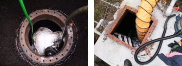

はじめに
当社は危険物タンクや配管の気密漏洩試験を主体に、
危険物施設に関するあらゆるニーズにお応えし、
施設保全と維持管理の向上に努めております。
地下タンク検査では国産で初めて確立したテクノフロンティアより
受け継いだ技術と経験で業界では老舗の当社は未来の環境を守り、
検査による早期発見で事故を未然に防ぎます。
危険物施設に関するあらゆるニーズにお応えし、
施設保全と維持管理の向上に努めております。
地下タンク検査では国産で初めて確立したテクノフロンティアより
受け継いだ技術と経験で業界では老舗の当社は未来の環境を守り、
検査による早期発見で事故を未然に防ぎます。
事業内容
- 地下タンク機密漏洩検査
- 埋設配管機密漏洩検査
- 移動タンク（ローリー）機密漏洩検査
- タンク内部清掃
- タンク廃止処理
- タンク設置工事
- 配管改修工事
- 廃油回収
- 内部ライニング計量機検定
- ボイラー施設各種点検
- 電気防食高精度油面計
- 災害緊急給油
事業案内
-
危険物地下タンク及び埋設配管気密漏洩検査気相部検査(微加圧法、加圧法)、液相部検査(聴音測定、水位測定、自然法査測定)、二重殻タンク外殻検査(加圧法、減圧法)、測定装置は気相部検査用に4機種、液相部検査用に2機種、すべてのニーズに合わせた検査が可能です。
-
移動タンク気密漏洩検査ローリーは 単槽から多槽まで自動検査装置でいかなる検査も可能です。また安全弁検査も行います。消火器点検も行えます。

-
タンク内部水抜きと循環清掃作業タンク内部の水は結露などでたまります。また底部にはスラッジもたまります。循環型清掃で水抜きも行い同時に清掃もします。

-
危険物タンク廃止消防署への書類手続き、事前指導も代行、水入れ、砂入れ、撤去、あらゆる廃止工事も可能です。
-
危険物タンクの設置ホームタンクより大型の地下タンクの設置、新設のタンクの敷設工事も行っています。
-
各種配管工事各配管の改修工事、各配管の個別の漏洩検査、フランジパッキン交換、バルブの交換等行います。
-
内面ライニング工事紫外線硬化樹脂貼付法による安全なFRPライニングです。当社は総合事業者の認定をうけております。
-
油面計工事高感度油面計からアナログのフロート式の油面計まで扱っています。
-
計量機の点検からメンテ計量検定、各種ノズルの交換、ホース交換等行っています。
-
ボイラー施設の各種点検法定点検及び貯油槽、熱交換器の点検。保守を行っています
-
土壌調査油で汚染された土地等の土壌調査や土壌改良作業を行っています。
-
地下タンク内部清掃、地上タンク内部清掃内部を洗浄してより確実な加圧検査を実施します。
-
電気防食
-
高精度油面計
-
緊急給油システムムサシ産業緊急時給油システムとは緊急時（震災などの広域災害時や有事の際、または局所的な停電等）には、通信・電気・ガス・水道などの「ライフライン」が機能を失う危険性があり、復旧まで長時間を要します。
自家発電システムが設置されている施設においては、機器に損傷がなければ停電時には一時的に電力供給が可能となります。
しかし、自家発電の稼働時間は短時間であるため、迅速な燃料の供給体制が必要となります。
ムサシ産業では、ムサシ緊急給油システムによって、現状のリスクを分散し、より地域と密着し緊急時の対応を行うことにより、「確実かつ短時間・最短ルート」での燃料供給を実現いたします。
概要イメージ図
湾岸施設
湾岸に面している油槽所(8ヶ所予定)-
北海道油槽所
札幌市・・・ - 東北油槽所
仙台市・・・ -
新潟油槽所
新潟市・・・ -
関東油槽所
横浜市・・・ -
関西油槽所
大阪市・・・ -
広島油槽所
広島市・・・ -
四国油槽所
高知市・・・ -
九州油槽所
長崎市・・・
ムサシ産業(株) 給油依頼連絡系統図・給油体制
費用について
固定費詳細
前頁「油保管料など」についての費用詳細(毎月かかる経費)前頁「配送実費」についての費用(実際の運用時の費用)
その他、特記事項
-
有事の際の連絡手段
- 特殊電話・インターネット回線を常備
※インターネットを介した通話サービス(LINEやskypeなど)を基本とするが特殊電話も設置。
免責・賠償について
- 免責事項・損害賠償に関しては、契約時に別途協議。
会社概要
平成25年7月1日現在
商 号 ムサシ産業株式会社
関東本社 〒337-0016 埼玉県さいたま市見沼区東門前447-5
TEL 048-681-5353･FAX 048-689-1811
営業所 ■中部関西営業所
滋賀県長浜市宮司町399
■上信越営業所
新潟県南魚沼郡湯沢町大字湯沢831
■東北営業所
岩手県北上市新殻町1-7-40-103
設立年月日 昭和62年7月7日
資本金 1,000万円
営業品目 【Ⅰ.防災部門】
Ⅰ-1.地下タンク及び地下埋設配管の定期点検
Ⅰ-2.タンクローリーの定期点検
Ⅰ-3.危険物施設の新設・改造・廃棄及び補修工事
Ⅰ-4.タンクの水抜き及び清掃
【Ⅱ.防蝕部門】
Ⅱ-1.タンク類の下地処理
Ⅱ-2.樹脂ライニング全般
Ⅱ-3.塗装工事
Ⅱ-4.タンクの再生工事
取引銀行 ■三井住友銀行、上野支店
■埼玉信用金庫、北浦和支店
代表取締役 木村 誠
従業員 16名(他に協力業者3～6社)
加入団体 全国危険物安全協会・中小企業家同友会・石油商業組合協力指定業者
許可番号 ■危険物地下タンク定期点検事業者認定 地第11017号
■危険物移動貯蔵タンク定期点検事業者認定 移第11008号
■鋼製地下タンクFRP内面ライニング事業者認定 ライニング第1002号
■特別管理産業廃棄物収集・運搬課程修了
主なる仕入先 (株)タツノ・(株)工技研究所・トキコ(株)・昭和機器工業(株)・長野計器(株) (敬称略・順不同)
主なる販売先 (株)NTTファシリティーズ
NTTインテリジェント企画開発(株)
日比谷総合設備(株)
日本メックス(株)
堀川産業(株)
UDトラックス(株)
苗場プリンスホテル
ボッシュ(株)
東京インキ(株)
三八五流通(株)
西武鉄道(株)
(株)カインズホーム
官公庁・学校・病院・ガソリンスタンド、他多数
会社沿革
昭和40年6月 東京都千代田区において、主として橋梁のグリットブラストによる下地処理工事を開始(ムサシ産業の前身設立)昭和56年9月 大型石油備蓄タンクの下地処理及びライニングの施工を開始。
昭和62年7月 資本金1,000万円でムサシ産業株式会社を東京都台東区に設立。
昭和63年4月 東洋エンジニアリングの100%子会社(株)テクノフロンティアと業務提供。フランチャイザーとして、消防法に基づく危険物施設の点検業務を開始。
昭和63年5月 防災部門を新設。埼玉県浦和市に埼玉営業所、宮城県仙台市に仙台営業所を開設。
平成1年3月 本社を埼玉県浦和市に移転。
平成1年10月 新潟県湯沢町に新潟出張所を開設。
平成2年3月 東京電力福島原子力発電所の工事需要に応じ、福島県大熊町に福島営業所を開設。
平成2年6月 東京都北区に東京事業所を新設。
平成3年8月 仙台営業所及び、福島営業所を閉鎖。
平成4年1月 本社を埼玉県大宮市堀の内町に移転。
平成5年4月 神奈川県横浜市に神奈川営業所を開設。
平成8年12月 (株)テクノフロンティアとのフランチャイズ契約を解消し、危険物施設の点検と保守業務より撤退。 同時に技術提携契約を締結。危険物の点検・補修等の事業の実施権を取得。これにより取引先を継承。
平成12年11月 本社をさいたま市見沼区へ移転。
平成16年6月 消防法の改正により液相部検査導入、業務開始。
平成19年3月 上信越営業所開設。
平成22年10月 中部関西営業所開設。
平成22年 鋼製地下タンクFRP内面ライニング事業者認定取得。
平成25年5月 東北営業所開設。